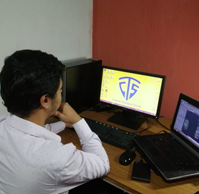
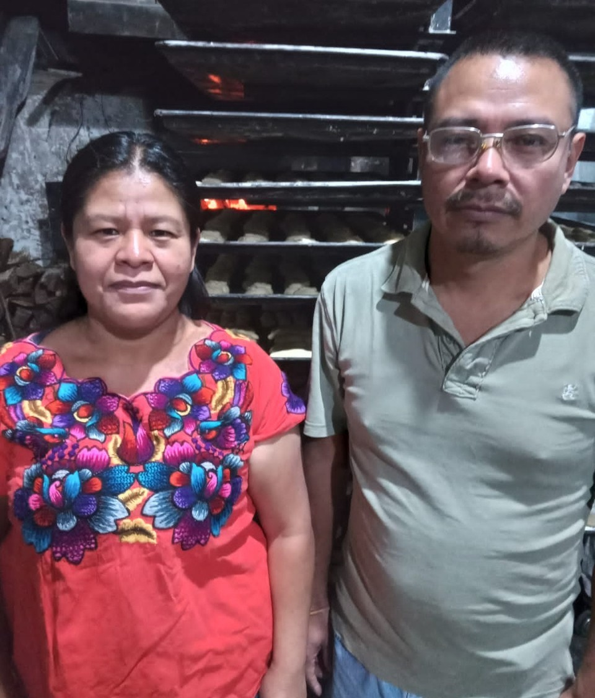
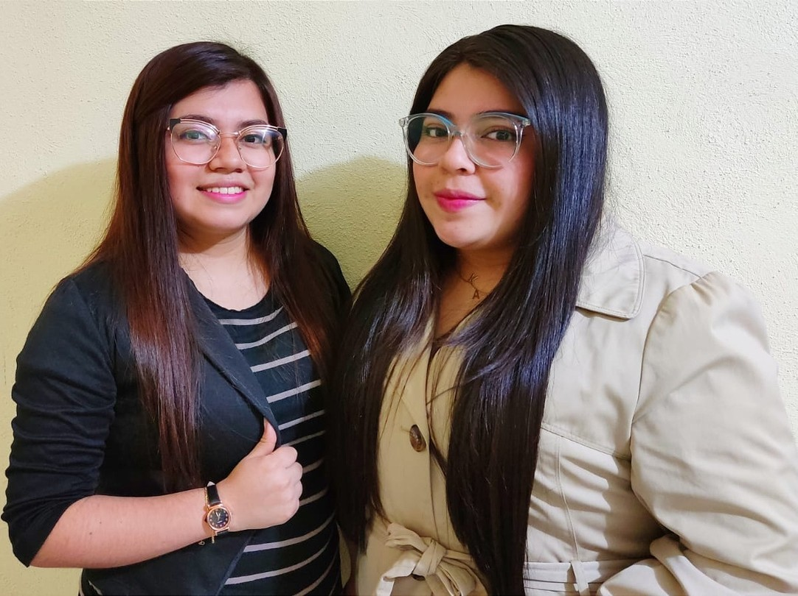

CUSTOMIZED TECHNOLOGICAL SOLUTIONS (CTS)
Raul Barrios y Elias Barrios
Herman y Elías Barrios Gonzales son dos hermanos que el año 2021 tenían que realizar un proyecto tratando de encontrar un servicio de soporte, al buscar cotizar se encontraron con muy pocas opciones sin embargo las que encontraron eran demasiado costosas y cobraban en dólares.
Nació como una necesidad de ofrecer un servicio de soporte, que no sea excesivamente costoso y que no solo supla la necesidad de una hora, sino que dar solución al problema. Los productos que ofrecen son de soporte, venta de repuestos, accesorios y suministros tecnológicos, mantenimiento, reparación de equipo de cómputo y asesoría.
“Nuestra empresa satisface necesidades secundarias, brindándole servicios tecnológicos de todo ámbito a los clientes que tengan problemas con su equipo de cómputo. Por el momento no hemos promocionado nuestros servicios, pero a corto plazo nos anunciaremos por medio de las redes sociales.”
Características de flexibilidad personalización y atención.

Panadería Elieser
PEDRO SICAJAU Y SARA BOCH SURUY
En 1996 los suegros de la estudiante de administración Lilian Vargas, pensaron que era necesario prosperar, sin pensar que esa decisión les traería mayor abundancia de la mano de Dios y perseverancia propia en sus sueños, decidieron poner una Panadería conocida como Eliezer, dedicándose exclusivamente a elaborar pan popular con sabores exquisitos para todas las personas pensando en la necesidad que tenemos todos de saciar el hambre mediante un tiempo de alimento del día. Don Pedro expresa que ha puesto en práctica los conocimientos administrativos a su negocio, logro realizar estándares de producción mediante tiempos y cantidad de producto. Mejorando la eficiencia en la producción.
Pedro y Sara dan un consejo para aquellas personas que deseen emprender en el futuro: “Deben ser perseverantes y seguir luchando por los sueños sobre todo ser prudentes en la toma de decisiones que se plantean en el diario vivir”.

Pinky Promise
DANIELA GARCÍA Y KATERIN GARCÍA
Pinky Promise está dedicado a la belleza, cosmética y cuidado personal, da inicio con un pensamiento innovador en Junio del 2021 y el gusto por los productos que las mujeres puedan utilizar.
Katerine García comenta: Junto con mi hermana Daniela decidimos emprender al darnos cuenta de que el consumo de productos como maquillaje, tónicos fáciles, mascarillas faciales, ropa, accesorios. Los accesorios dan a las mujeres seguridad y las hace sentir bien en su día a día. Decidimos realizar un estudio de mercado, llegamos a proveedores e iniciamos con nuestra tienda online.
La tienda es en línea por lo cual utilizan medios digitales (Teléfonos inteligentes o computadoras) en las plataformas de Facebook, Instagram y Tiktok, debido a que se han convertido en líderes de información y han apoyado el emprendimiento a llegar a más audiencia.
Daniela expresa:
“La administración nos ha ayudado a mantener objetivos claros, implementar nuevos proyectos, usar la mejora continua y alcanzar un liderazgo”.
Ellas consideran que para tener éxito en su negocio deben tener claro el plan de negocios, satisfacer las necesidades y deseos del cliente. Enfocados en el segmento de mercado que atienden, tener confianza, seguridad y honestidad al ofrecer el producto, hacer un estudio de mercado y posicionarse.

Glitter and Glue
Alison Herrera
Glitter and Glue inicio a finales del año 2016, empezaron realizando detalles para amigos y familia hasta que poco a poco la empresa empezó a crecer gracias a las redes sociales como Facebook e Instagram, innovando los servicios y productos teniendo una gran variedad, como son las cajitas personalizadas, playeras, pachones y demás; con el tiempo se fue capacitando al recurso humano y servicio de decoración de eventos, decoración de globos. Glitter and Glue brinda productos de excelente calidad, con un precio accesible, ya que cuenta con una tienda en línea y con servicio a domicilio a todas las zonas de la Ciudad de Guatemala y departamentos.
“Considero que se debe tener definido el nicho de mercado de esta manera se puede comunicar el mensaje y generar nuevas demandas que se desarrollan al entorno de la comunidad deseada, seguido de tu plan de negocio establecido que sea claro y conciso, para tener éxito se necesita confianza y seguridad tanto con unos mismo como en el producto o servicio que se ofrece. Tener un liderazgo estar presente en todos los procesos y las ideas, tener la capacidad de superar cualquier obstáculo e ir mejorando para desarrollar la capacidad de visualizar soluciones rápidas y sólidas que no afecten nuestros objetivos”.